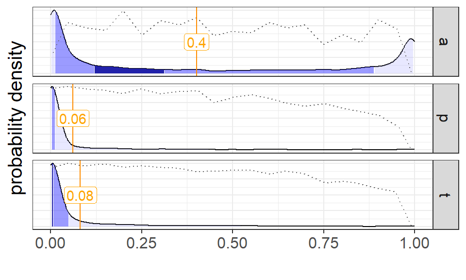
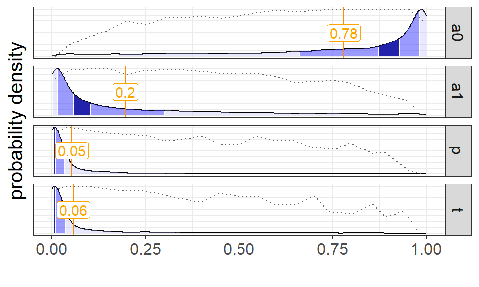
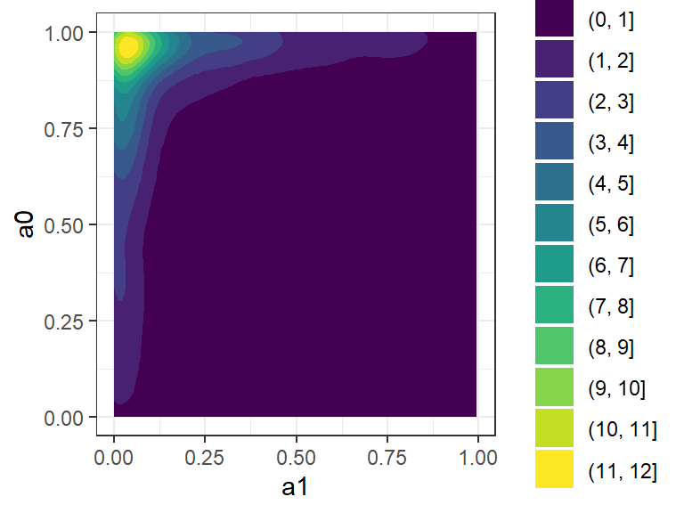

Problems with chance-corrected agreement statistics have been studied for a long time, in particular when one class dominates the ratings (classifications). This would happen, for example, in a medical test for a rare condition, where most of the results would be negative. Non-intuitive results for kappa can result from such cases, a situation that has become known as the Kappa Paradox. See Bonett (2022) for one survey of such issues. Attempts have been made to modify the basic kappa formula to accommodate unbalanced classifications. In Byrt et al. (1993), observed agreement is adjusted for bias in rater tendencies (which would be the \(p\) parameter here) and for relative prevalence of classes. Krippendorff (2013),illustrates such a hypothetical case (page 484):
Suppose an instrument manufacturer claims to have developed a test to diagnose a rare disease. Rare means that the probability of that disease in a population is small and to have enough cases in the sample, a large number of individuals need to be tested. […] Suppose two separate doctors administer the test to the same 1,000 individuals. Suppose each doctor finds one in 1,000 to have the disease and they agree in 998 cases on the outcome of the test.
The paradoxical result is that the Fliess kappa for this example is near zero, even though the raters agree on 99.8% of the cases. The reason is that the kappa is defined as the agreement rate minus the agreement rate expected by chance, and the expected agreement rate is very high due to the distribution of classes. Such unbalanced cases are common in practice, leading to the creation of new inter-rater measures like AC1 (Gwet, 2008) to attempt to accommodate this situation, but this solution has been criticized as well (Krippendorff, 2013).
The controversy can be summarized in the two points of view:
(pro-kappa) the test has zero agreements on test-positive cases, and is therefore unreliable, therefore \(\kappa = 0\) is correct, versus
(anti-kappa) almost all the cases are in perfect agreement, therefore the test is reliable, and kappa should be near one.
The apparent problem can be usefully seen through the lens of the Fleiss kappa. If the baseline for comparison is randomly chosen pairs of ratings, any such set will be identical to the original data set in this case. Since the data is indistinguishable from randomness, the kappa, and hence accuracy should be zero. So in that sense the Fleiss kappa gives the correct result (kappa nearly zero). This conflicts with intuition in that there is a high level of raw agreement in the data.
Reliability statistics are generally concerned with two kinds of differences in ratings. Within subjects, if individual subjects are assigned ratings that don’t have much agreement, this is like measurement error. An ideal measure would return the same rating for the same subject every time. The other kind of difference is between subjects. There we want variation, because if all the subjects get the same rating, the scale doesn’t give us information. In the paradox example, there’s low variation within subjects (low measurement error), but very little variation between subjects, so the scale itself isn’t given us much information.
2 Modeling the Paradox
The t-a-p model can illuinate this situation. If nearly all the ratings \(C_{ij}\) are one value, then the likelihood function over rating sums can be approximately reduced to the likelihood function over individual ratings given by
\[ \text{L}(t,a,p;c_{ij}) \approx a(t - p) + p \tag{1}\]
so that \(\frac{\partial L}{\partial t} = a\), \(\frac{\partial L}{\partial a} = t- p\), and \(\frac{\partial L}{\partial p} = 1 - a\). Setting these to zero in the usual way to find the maximum, we obtain contradictory solutions to the likelihood maximization problem, since the first and last conditions imply that \(a=0\) and \(a=1\), respectively. Additionally \(t = p\) in Equation 1 requires that raters are unbiased. The contradictory solutions for rater accuracy \(a\) reflect the two “paradoxical” positions described above, and these show up empirically if we solve for the unconstrained parameters. The data are nearly under-determined with respect to the full t-a-p model, and the posterior estimate samples show prevarication.
To illustrate the dual nature of the maximum likelihood solution, he three-parameter t-a-p model was fitted to N = 1,000 samples with R = 2 (two raters). As described above, 998 of the subjects are assigned Class 0 (negative test result) by both raters, and for the remaining two cases they split, with one Class 1 and one Class 0 each.
Show the code
refresh =FALSEif (refresh) { counts <-data.frame(N_r =2,N_c =c(rep(0,980),rep(1,2))) |>count(N_r, N_c) fitted_model <- tapModel::fit_counts_mcmc(counts, stan_model ="t-a-p", quiet =TRUE) draws <- fitted_model$fitted_model$draws()write_rds(draws,"data/Paradox_samples.RDS")} else { # to save time draws <-read_rds("data/Paradox_samples.RDS")}# plot the draw densitiesdraws |> tapModel::plot_densities_mcmc()

Figure 1: Results from a t-a-p model on the kappa paradox data, showing the density of estimates.
To see the Stan code used to fit the Bayesian t-a-p model, click the button below.
Show the code
//// Stan model specification for fixed rater accuracy and no random effects//// Learn more about model development with Stan at://// http://mc-stan.org/users/interfaces/rstan.html// https://github.com/stan-dev/rstan/wiki/RStan-Getting-Started//// functions to make the code simpler belowfunctions {real p_true(real a, real s) { // convenience function for binomial probability forreturn a + (1.0-a)*s; // subjects that are class 1 in reality }real p_false(real a, real s) { // convenience function for binomial probability forreturn (1.0-a)*s; // subjects that are class 2 in reality }}// The ratings summary (number of 1-ratings per case) and descriptivesdata {int<lower=0> N; // number of rows of dataarray[N] int<lower=0> N_r; // number of raters for a count pairarray[N] int N_c; // count of ratings of category 1 for count pairarray[N] int<lower=0> n; // multiplicity of this (N_r, N_c) pair}// The parameter to estimateparameters {real<lower=0, upper = 1> a; // fixed for all ratersreal<lower=0, upper = 1> p; // guess rate for class 1 when inaccuratereal<lower=0, upper = 1> t; // true class 1 rate}// The model to be estimated. We model the output// count (of 1s) by the binomial mixture described// in the paper. S is the fraction of 1-ratings in the whole data set// The log_sum_exp function is useful for this--we take the log of each binomial// likelihood using built-in functions, and the log_sum_exp function exponentiates,// adds, and then takes the log to get the actual likelihood we care about.// cf http://modernstatisticalworkflow.blogspot.com/2016/10/finite-mixture-models-in-stan.htmlmodel { a ~ uniform(0,1); t ~ uniform(0,1); p ~ uniform(0,1);for(i in1:N) { // for each subject ratedtarget += n[i] * log_sum_exp( log(t) + binomial_lpmf(N_c[i] | N_r[i], p_true(a,p)), log(1-t) + binomial_lpmf(N_c[i] | N_r[i], p_false(a,p))); }}
The results in Figure 1 come from a MCMC summary of samples for the parameters. The plot for \(a\) shows a bimodal distribution of rater accuracy that slightly favors \(a \approx 0\) over \(a \approx 1\). Also in agreement with the analysis, the mode for \(p - t\) is nearly zero since both of those statistics are near zero. The \(t \approx 0\) tells us that the modeled result is that there are very view Class 1 (test positive) cases.
The parameter estimates in Figure 1 point us to divergent interpretations of the severely unbalanced data: (1) the accuracy is about zero and the results are due almost entirely to random ratings combined with a severe test bias, or (2) the accuracy is high, but the prevalence of the condition is very small. These two conclusions correspond to the usual philosophical positions in the paradox’s discussion. The graphs in Figure 1 show usefulness of MCMC sampling, and serve as a caution against taking mean estimate values as meaningful without inspecting the distribution first.
3 Divergent Accuracy
The MCMC estimation for the accuracy parameter vacillates between two poles, which leads to the idea to split Class 1 accuracy from Class 0 accuracy using two parameters for accuracy. This approach was suggested in Cicchetti & Feinstein (1990). It is a straightforward modification to the t-a-p model to bifurcate accuracy by using \(a_1\) for the true Class 1 branch of the probability diagram, and \(a_0\) for the Class 0 side. The MCMC posterior distributions for those two parameters are shown in Figure 2.
Show the code
refresh =FALSErefresh =FALSEif (refresh) { counts <-data.frame(N_r =2,N_c =c(rep(0,980),rep(1,2))) |>count(N_r, N_c) fitted_model <- tapModel::fit_counts_mcmc(counts, stan_model ="t-a0a1-p", quiet =TRUE) draws <- fitted_model$fitted_model$draws()write_rds(draws,"data/Paradox_samples2.RDS")} else { # to save time draws <-read_rds("data/Paradox_samples2.RDS")}# plot the draw densitiesdraws |> tapModel::plot_densities_mcmc()

Figure 2: Results from a t-a0,a1-p model on the kappa paradox data, showing the density of the parameter estimates. This one includes separate accuracy parameters for each class: a0 for Class 0 and a1 for Class1.
To see the Stan code used to fit the Bayesian t-a0,a1-p model, click the button below.
Show the code
//// Stan model specification for fixed rater accuracy and no random effects//// Learn more about model development with Stan at://// http://mc-stan.org/users/interfaces/rstan.html// https://github.com/stan-dev/rstan/wiki/RStan-Getting-Started//// functions to make the code simpler belowfunctions {real p_true(real a, real s) { // convenience function for binomial probability for return a + (1.0-a)*s; // subjects that are class 1 in reality }real p_false(real a, real s) { // convenience function for binomial probability forreturn (1.0-a)*s; // subjects that are class 2 in reality }}// The ratings summary (number of 1-ratings per case) and descriptivesdata {int<lower=0> N; // number of subjectsarray[N] int<lower=0> R; // number of raters fo a given subjectarray[N] int count; // count of ratings of category 1 for subject i}// The parameter to estimateparameters {real<lower=0, upper = 1> a1; // fixed for all ratersreal<lower=0, upper = 1> a0; // fixed for all ratersreal<lower=0, upper = 1> p; // guess rate for class 1 when inaccuratereal<lower=0, upper = 1> t; // true class 1 rate}// The model to be estimated. We model the output// count (of 1s) by the binomial mixture described// in the paper. S is the fraction of 1-ratings in the whole data set// The log_sum_exp function is useful for this--we take the log of each binomial // likelihood using built-in functions, and the log_sum_exp function exponentiates,// adds, and then takes the log to get the actual likelihood we care about. // cf http://modernstatisticalworkflow.blogspot.com/2016/10/finite-mixture-models-in-stan.htmlmodel { a1 ~ uniform(0,1); a0 ~ uniform(0,1); t ~ uniform(0,1); p ~ uniform(0,1);for(i in1:N) { // for each subject ratedtarget += log_sum_exp(log(t) + binomial_lpmf(count[i] | R[i], p_true(a1,p)), log(1-t) + binomial_lpmf(count[i] | R[i], p_false(a0,p))); }}
Histograms of MCMC draws in Figure 2 for the t-a0,a1-p model reveal the limitations of the three-parameter version. The plots suggest high confidence that \(a_0\) is near 1, and somewhat less confidence that \(a_1\) is near zero. There is evidence that the accuracy of negative test results is high, but there is no evidence that the accuracy of positive test results is high. A scatterplot of the two parameters as drawn together from the posterior distributions shows that they cluster around the modes of the distributions in Figure 2. In other words, the induced model prefers the case when the accuracy of negative test results is high, but the accuracy of positive test results is low.
Show the code
# make a scatterplot of the two accuracy parametersdraws |> tapModel::extract_param_draws_mcmc() |>ggplot(aes(x = a1, y = a0)) +stat_density_2d_filled(aes(fill = ..level..)) +theme_bw()

Figure 3: Scatterplot of the two accuracy parameters from the t-a0,a1-p model, showing that they converge to a high value of Class 0 accuracy and a low value of Class 1 accuracy.
The use of additional parameters to clarify the cases of unbalanced data can be expanded to accommodate a wide range of rater models.
It seems contradictory to say that we can classify Class 0 with confidence, but not Class 1, because these seem like two sides of the same coin. However, when there are many Class 0 cases, and only a few Class 1 cases, we could have 99% accuracy in true positives for Class 0 and nearly zero true positives for Class 1. One problem with the traditional kappa measures comes from condensing those two classification statistics into one.
4 Individual p parameters
We could take this one step further and split \(p\) into two parameters that correspond to the two classes. In this t-a0,a1-p0,p1 case, we may get data sets that are not identifiable for label-switching reasons. That is, we may be able to find the maximum likelihood mixture of binomial distributions, but not know which is Class 0 and which is Class 1.
With the \(a_0,a_1,p_0,p_1\) parameters, label-switching means that we swap \(\bar{t}\) for \(t\) and the two corresponding means swap as well. That requires some second set of the parameters \(a_0',a_1',p_0',p_1'\) such that
If Equation 2 holds, we can swap the primed parameters for the non-primes, and exchange \(t\) for \(1-t\), and the distribution is the same, with the same likelihood. There are four free parameters and two constraints shown above, plus the constraints that all parameters are in [0,1]. A example of a label-switching set is when \(\mu_0 = \bar{a_0}p_0 > a_1 + \bar{a_1}p_1 = \mu_1\), so that there are more Class 1 ratings for Class 0 cases that there are for true Class 1 cases. Suppose \(a_0 = .5\), \(a_1 = .2\), \(p_0 = .7\), and \(p_1 = .1\). Then we have \(\mu_0 = (.5)(.7) = .35\) and \(\mu_1 = .2 + (.8).1 = .28\), so the mean of the Class 1 ratings is to the left of the mean of the Class 0 ratings.
Such situations point to poor quality data combined to too many parameters. For example, suppose the example above is wine tasting ratings, and it’s easier to for judges to agree on poor wine than excellent wine (this seems to be the case in practice). Suppose further that some of the raters are motivated to over-rate poor wines, pushing up the \(p_0\) rate to .7. This rating inflation makes the poor wines seem better than they are, and by comparison the good wines seem worse. From the data, we can’t tell which class is which under these model assumptions and with this data. However, the MCMC results will at least show us a multi-model distribution. In general, splitting the accuracy or randomness parameters should probably only be done for a specific reason, as with the paradox example, where we saw a bimodal distribution for accuracy.
5 Estimating Parameters
The tapModel library and the advanced version of the interactive application can both be used to generate MCMC results from the t-a-p models expanded to include two \(a\) parameters and (optionally) two \(p\) parameters. There is an illustration of this in Chapter 8: The t-a-p App.
References
Bonett, D. G. (2022). Statistical inference for g-indices of agreement. Journal of Educational and Behavioral Statistics, 47(4), 438–458.
Byrt, T., Bishop, J., & Carlin, J. B. (1993). Bias, prevalence and kappa. Journal of Clinical Epidemiology, 46(5), 423–429.
Cicchetti, D. V., & Feinstein, A. R. (1990). High agreement but low kappa: II. Resolving the paradoxes. Journal of Clinical Epidemiology, 43(6), 551–558.
Gwet, K. L. (2008). Computing inter-rater reliability and its variance in the presence of high agreement. British Journal of Mathematical and Statistical Psychology, 61(1), 29–48.
Krippendorff, K. (2013). Commentary: A dissenting view on so-called paradoxes of reliability coefficients. Annals of the International Communication Association, 36(1), 481–499.